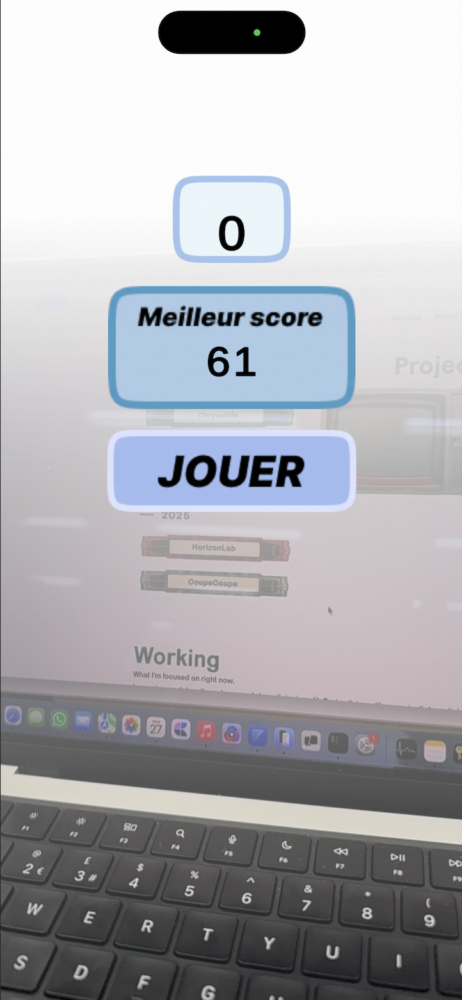

CoupeCoupe is Fruit Ninja in space, rebuilt as an
augmented-reality game on iPhone. You lift the phone, look
around, and asteroids drift past your living room. A swipe
cuts them in half.
The game is built in Unity with ARKit. The room becomes the
arena, and the depth of the play space is real, not faked.
asteroids in the living room
The whole project is about pushing every iPhone capability
we could find. The gyroscope steers the camera, the LiDAR
sensor on supported devices anchors objects against real
surfaces, the haptic engine fires on every successful slice.
The UX and UI follow the same idea. Menus float in 3D space,
buttons respond to gaze and proximity.

HUD and menus, in your room
It started as a small experiment and turned into a proper
proof of how far you can take a casual mechanic when the
whole device, screen, sensors, haptics, sound, all pulls in
the same direction.